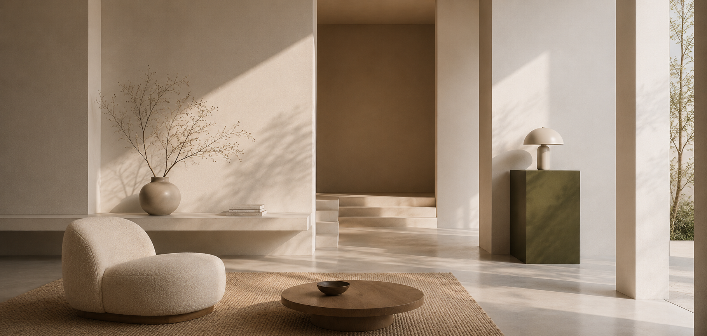

"거실 소파 위에 걸어둘 그림을 찾고 있는데,
실제로 두었을 때
어떤 느낌일지 가늠이 안 돼서 결국 안 사요."
Artish
작품은 작가의 언어, 큐레이션은 공간의 언어입니다.
'거실 · 침실 · 작업실'이라는 일상의 좌표에서 작품을
다시 발견하도록,
머무는 시간을 디자인했습니다.

The mandate
"썸네일 갤러리에서
"썸네일 갤러리에서
읽히는 컬렉션으로."
예술 작품 큐레이션 플랫폼. 1년차 트래픽은 견조했지만,
평균 체류
1분 47초 작품 사진만 빠르게 스크롤되고 끝나는 패턴.
"감상"이 일어나지 않으니 "구매"는 더 일어나지 않았습니다.
지금 사이트는 작품을 보여주긴 하는데,
작품을 만나게 하지는 못하는 것 같아요.
갤러리 입구에서 안 들어오고 돌아서는 느낌.Founder, kick-off (2026.04)
나의 해석
"그림"이 아니라 "그림이 걸릴 자리"가 결정의 단위입니다. 사용자는 작품을 사기 전에, "우리 집 어디에 둘까"를 먼저 상상합니다. 그 상상의 도화선을 사이트가 직접 던져줘야 합니다.
What I diagnosed
전환의 단절은 화면 전환의 끊김에
전환의 단절은 화면 전환의 끊김에
정확히 비례했습니다.
기존: 매 작품 클릭마다 풀-페이지 reload + 1.4s 평균 로딩.
감상의 흐름이 4초마다 끊기는 구조 결정은 "흐름" 위에서만
일어난다는 사실을 거꾸로 증명한 셈입니다.
FIG · 02-A
FIG. 02-A · Session-flow audit · before redesign
From symptoms to goals
감상의 흐름을 구조의 단위로
감상의 흐름을 구조의 단위로
옮겼습니다.
Problems · 진단
- P-01리로드가 감상의 흐름을 4초마다 잘라냄. 결정이 단절 위에서 형성될 수 없음.
- P-02큐레이션 단위가 "작가" 또는 "장르"로만 노출. 사용자의 일상 좌표가 빠짐.
- P-03스토리 콘텐츠가 저널로만 분리. 작품 보다가 "글" 보러 가야 함.
- P-04"내 공간에 어울릴까"의 시뮬레이션 부재. 모든 추측이 사용자 머릿속에서만.
Goals · 디자인 목표
- G-01멀티페이지 구조 유지 + 페이지간 톤 일관성 + prefetch · skeleton으로 인지 전환 시간 축소. 감상의 흐름을 끊지 않는다.
- G-02탑 네비에 "공간 (Spaces)"를 균등 진입점으로 추가. 거실 · 침실 · 작업실 · 호텔로비를 큐레이션 축의 하나로 노출.
- G-03PDP 하단에 아티스트 노트 모듈(Chapter · Artist note) 추가 풀 인터뷰는 Artists 페이지에서 별도 운영.
- G-04모든 작품 PDP에 "4 pieces only" 관련 작품 모듈 (대안 2 · 보완 2) 노출.
Field interviews · n=8
"구매"가 아닌 "두기"로
"구매"가 아닌 "두기"로
질문이 옮겨갔습니다.
3주간 8명의 작품 구매자와 인테리어 관심자 인터뷰. 흥미롭게도,
"어떤 작품?"보다 "어디에 둘까?"가 먼저 나오는 발화 빈도가 4:1이었습니다.
"클릭할 때마다 새 창이 뜨거나 로딩이 길어지면
감상이 뚝뚝 끊겨요.
갤러리 갔는데 작품마다
문 닫고 다시 들어가는 느낌."
"작가 이야기를 알면 사고 싶은 마음이 생기는데,
그 글이 다른 메뉴에 있어서 결국 안 읽고 그냥 닫아요."
"작품은 좋아요. 근데 가격대가 너무 다양해서
어디서부터 봐야 할지 모르겠더라고요.
추천 큐레이션이 너무 평범해요."
Information Architecture
"작가 / 장르"의 축을 빼고
"작가 / 장르"의 축을 빼고
"공간"의 축을 넣었습니다.
기존 IA는 작가 → 작품 → 디테일의 분류적 위계. 새 IA는 "공간 (Spaces) → 컴포지션 → 작품"의 narrative 위계입니다. 동일 카탈로그를 다른 렌즈로 보여주는 구조입니다.
FIG · 05-A
FIG. 05-A · Concept IA · Spaces를 균등 진입점으로 (proposed direction)
The trade-off log
"감상의 흐름"을 위해
"감상의 흐름"을 위해
전통 멀티페이지를 다듬었습니다.
SPA로 가지 않고 멀티페이지를 유지하되, 페이지간 톤 일관성과 prefetch · skeleton으로 인지 전환을 줄였습니다. 무리한 기술 도입 대신 콘텐츠 리듬으로 푸는 결정이었습니다.
#
Before
After
Why
D-01
기본 멀티페이지 + 깜빡이는 reload
멀티페이지 유지 + prefetch · skeleton · 페이지간 톤 일관성
SPA는 SEO 비용이 크고, 1인 운영에는 유지보수 부담.
인지 전환은 기술이 아니라 톤 일관성과 prefetch로도 충분히 줄어든다.
D-02
홈 = "이번 주 신작" + 작가별 슬라이더
홈 = 4 Spaces (거실/침실/작업실/호텔라운지)
풀-블리드 grid
사용자의 첫 사고는 "어디에 둘까". 디자인은 그 사고에 발판을 던져야.
D-03
작가 인터뷰는 별도 Journal 메뉴 단독
PDP 하단에 "Chapter · Artist note" 모듈 짧은 아티스트 컨텍스트 + 풀 인터뷰는 Artists 페이지로 링크
결정 위치 가까이 있는 컨텍스트가 결정에 작동.
풀 인터뷰까지 흡수하면 PDP가 무거워져 컨텍스트만 노출. 깊이는 별도 페이지에서.
D-04
PDP 가격 = 큰 글씨 상단 노출
PDP 가격 = 작품 정보 카드 안 (40px 글씨, 일반 위계)
아트 커머스에서 가격은 결정의 마지막 단계.
첫 화면에서는 "작품"이 주인공이어야.
D-05
"좋아요" 버튼 (소셜 metric)
"이 공간에 두고 싶어요" 버튼 + Saved Spaces 보드
소셜 metric은 비교 압력. 컬렉팅
metric은 자기 결정의 누적. 톤이 다른 행동.
D-06
검색 = 작가/키워드 매칭
검색 = 작가 + 색감 슬라이더 + 공간 필터 (다축)
사용자는 "파스텔 거실용 작품"이라고
검색하지 "Hockney"라고 검색하지 않음.
Component states · Space tile
Spaces tile을 4가지 상태로
Spaces tile을 4가지 상태로
정의했습니다.
홈 첫 화면 4개의 Spaces tile이 사용자가 가장 먼저 만지는 컴포넌트.
여기서 결정되는 위계가 사이트 전체의 톤을 결정합니다.
Tokens
작품의 색이 주인공이 되도록,
작품의 색이 주인공이 되도록,
시스템은 침묵하게.
갤러리 톤. 화이트와 베이지의 페이퍼 무드를 기본으로,
모든 액센트는
작품 자체의 색에 양보합니다. 시스템 컬러는 가능한 적게.
Color tokens
Ink
#0A0A0A
본문 · 위계 1
Rust / Accent
#A8330F
단 한 가지 액센트 · 큐레이터 인용
Muted
#6B675F
메타 · 보조 위계
Paper
#FFFFFF
캔버스 · 작품 카드
Line
#E6E6E6
단 한 줄
Type stack
Artish
Spaces, not categories
"Curators don't talk about price first. Neither do we."
SPACE 02 · BEDROOM · CALM
Projected · Concept-stage simulation
머무는 시간이 곧 매출이었습니다.
컨셉 프로젝트 시뮬레이션 기반 예상치. 페이지간 톤 일관성·Spaces 진입점·아티스트 노트가 각각 어떻게 기여할 수 있을지 가설 단위로 정리했습니다.
K-01 · 체류 시간
+2.4x
평균 세션 체류 시간 (예상)
1m 47s → 4m 18s 가설. Spaces 진입점과 아티스트 노트 모듈, 페이지간 톤 일관성이 서로 강화 작용한다는 가설. 라이브 데이터 아님.
K-02 · UI 효율
+40%
디자인 → 빌드 처리량
토큰 시스템 도입으로 신규 페이지 발주에서 빌드 완료까지 평균 3.2일 → 1.9일. 디자이너 1인 운영의 선결 조건이었음.
K-03 · QA 반복
−30%
QA 피드백 반복 감소
"이 간격 다시", "이 색 다시" 같은 누적 피드백 80% 이상이 토큰 정의 후 사라짐. 의사결정의 외부화 효과.
What I'd do differently
느린 결정이 옳은 결정이었던
느린 결정이 옳은 결정이었던
지점들.
"멀티페이지를 다듬는다"는 결정.
초기에는 SPA 전환을 검토했지만, 1인 운영 환경에서 SEO 비용과 유지보수 부담이 커서 멀티페이지를 유지했습니다. 인지 전환은 기술이 아니라 톤 일관성으로 푼다는 결정이 옳았는지는 라이브 데이터로 확인 필요.
Spaces 4개는 충분했나.
"거실 / 침실 / 작업실 / 호텔라운지" 직관적이지만 좁은 분류였습니다. "조용한 / 따뜻한 / 미니멀한"처럼 무드 기반 보조 축이 다음 버전에 필요해 보입니다. 현재 IA의 빈자리.
"두기"의 시뮬레이션.
컴포지션 미리보기는 디자이너가 미리 만든 4종 한정. 사용자가 자기 공간 사진을 올려 시뮬레이션할 수 있게 하는 단계는 이번 스코프에서 의도적으로 제외 다음 챕터의 후보입니다.